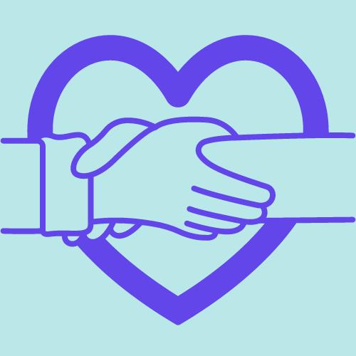
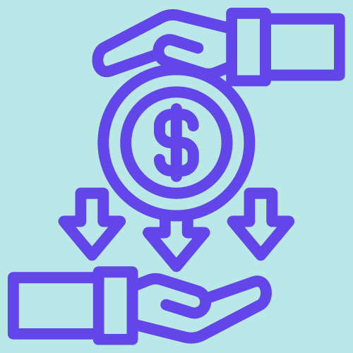
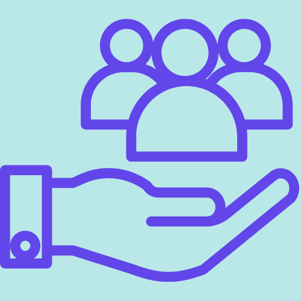
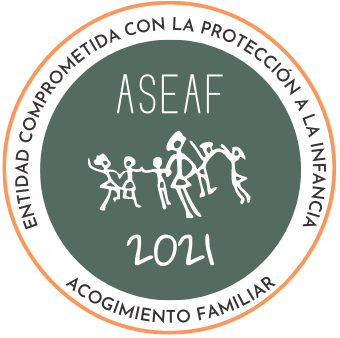

Si no puedes ser familiar acogedora, hay otras maneras en las que puedes apoyar el acogimiento familiar
voluntariado
Puedes proporcionar apoyo escolar y domiciliario a los menores en acogimiento familiar.
Colaborar en la realizacion de eventos y actividades o en campañas de difusion.
Apuntarte a programas de voluntariado como la fundación Soñar Despierto o
Mamás en acción.
donando
Realizando una aportación puntual nos ayudas a mejorar nuestra actuación, financiando nuestros programas para dar
visibilidad al acogimiento familiar y apoyar a las familias acogedoras.
Puedes realizar tu aportación mediante transferencia, ingreso o a través de Bizum. Para ello consulta: Donaciones ASAEF.
difundiendo
La acogida familiar no es muy conocida, por eso puedes ayudar difundiendo esta idea en redes sociales o en tu entorno familiar o laboral.
Si eres una empresa, tambien puedes ayudar.
patrocinios
Puedes patrocinar un proyecto, con ello la empresa se compromete a realizar aportaciones económicas y difundir el proyecto.
Con ello la empresa se convierte en imagen del proyecto.
productos o servicios
Dependiendo del sector de tu empresa, también puedes realizar donaciones de productos o ofrecer tus servicios ya sea de manera gratuita o con un coste reducido.
entidad comprometida
Puedes entrar a formar parte del grupo de Entidades Comprometidas de ASAEF, que es una iniciativa para ofrecer un marco en el que promover y desarrollar acciones
dirigidas a la Infancia y Adolescencia.
ASEAF distinguirá a estas entidades, a través del sello y el diploma exclusivo "Entidad Comprometida con la Protección a la Infancia", que podrán ser utilizados por la entidad en los soportes que desee.
Descarga este PDF para más información.